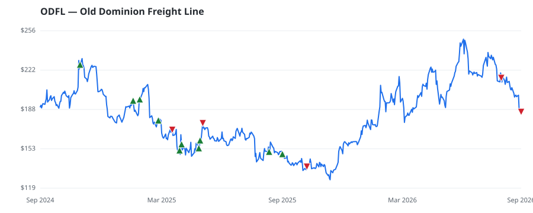

bullish · bearish · n/a — dots: price>SMA10 · SMA10>SMA50 · SMA50>SMA200 · up>down volume (20d)
Transportation · large cap · ★ 3 buyer(s) sit on a committee that regulates this industry
Members who bought ODFL earned a dollar-weighted +4.1% from their disclosure dates, versus +19.8% for the S&P 500 over the same holding windows (-15.7% alpha).

▲ green = a disclosed purchase · ▼ red = a disclosed sale (plotted on disclosure date)
Old Dominion Freight Line is the second-largest less-than-truckload carrier in the United States (following FedEx Freight), with roughly 260 service centers and 11,000-plus tractors. It is one of the most disciplined and efficient providers in the trucking industry, and its profitability and capital returns are well above those of its peers. Strategic initiatives focus on increasing network density through market-share gains and on maintaining industry-leading service (including ultralow cargo claims) through steadfast infrastructure investment. TRUCKING (NO LOCAL) · website
| Revenue | $5.5B | Net income | $1.0B |
|---|---|---|---|
| Operating income | $1.4B | Diluted EPS | $4.84 |
| Assets | $5.5B | Equity | $4.3B |
| Member | Chamber | Out-performer | Disclosed buys $ | Return on buys |
|---|---|---|---|---|
| Rohit Khanna | house | — | $72K | -0.6% |
| Marjorie Taylor Greene ★ | house | yes | $32K | +15.6% |
| Rob Bresnahan ★ | house | — | $8K | +16.1% |
| Rick Larsen ★ | house | — | $8K | -30.5% |
| Ritchie John Torres | house | — | $8K | +23.7% |
Disclosed $ figures are bracket midpoints — filings report ranges (e.g. $1,001–$15,000), not exact amounts.
🛒 Newly buying: NatWest Group plc (+3%, 3.2% of book)
| Fund | Fund alpha vs SPY | Position | % of book |
|---|---|---|---|
| NatWest Group plc | +3% | $18M | 3.2% |
| HARBER ASSET MANAGEMENT LLC | +15% | $5M | 2.8% |
| Cherokee Insurance Co | +10% | $1M | 0.5% |
| Worthington Financial Partners, LLC | +17% | $1M | 0.7% |
| DELTA CAPITAL MANAGEMENT LLC | +6% | $1M | 0.3% |
| STF Management LP | +9% | $0M | 0.2% |
Hedge data: SEC EDGAR 13F · ranked funds beat SPY in >50% of their quarters · fund alpha = mirror-portfolio return minus SPY.